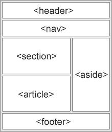

시멘틱 태그란 : 맨틱 태그란 의미가 있는 태그를 말한다. 모든 block 영역은 div 태그로, inline 요소는 span 태그와 달리, header, main, footer, section, article과 같은 태그 자체에 의미가 담긴 태그를 말한다.
시맨틱 태그를 왜 써야하는데? :
영역마다 무슨 태그를
써야하는지 생각하는 게 귀찮고 그냥 다 div 태그를 써버리면 되는데 뭐하러
시맨틱 태그를 사용하나? 라고 생각이 들 수도 있겠지만, 시맨틱 태그를
사용하는 것과 아닌 것에 차이점이 있다.
1. 검색엔진 최적화(SEO) : 검색엔진이 알맞은 검색결과를 내기 위해 웹사이트를 크롤링할 때 웹사이트의 내부에 담긴 정보를 토대로 사이트를 분석한다. 그럴 때, 의미있는 태그를 사용하면 좀 더 정확한 구조로 분석할 수 있도록 도울 수 있다.
2. 쉬운 소스코드 구조화 : 브라우저가 웹 문서의 소스 코드를 보고 어느 부분이 헤더인지, 어느 부분이 본문인지를 쉽게 알아낼 수 있다. 웹 문서를 분석하는 서비스 (ex. 스크린 리더기) 같은 것들이 있을 때 분석하기 용이해진다.
3. 코드 가독성 향상 : 여러 사람과 함께 작업을 할 때, 굳이 클래스를 지정하지 않아도 쉽게 어느 부분이 헤더 영역이고, 본문 영역인지 쉽게 알 수 있다. 그래서 유지보수를 하기도 쉬워진다.
시맨틱태그